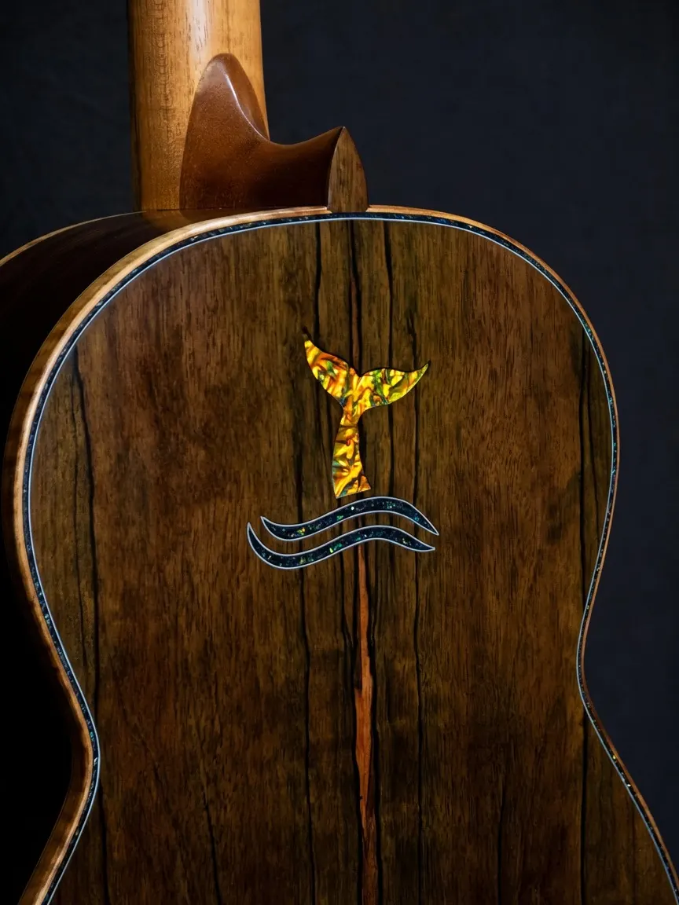
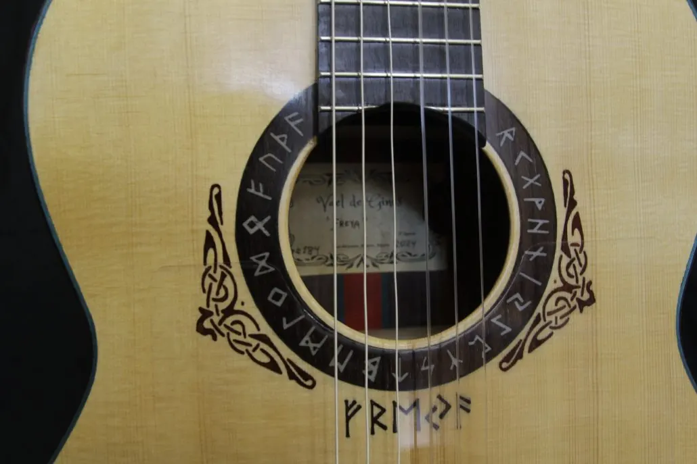
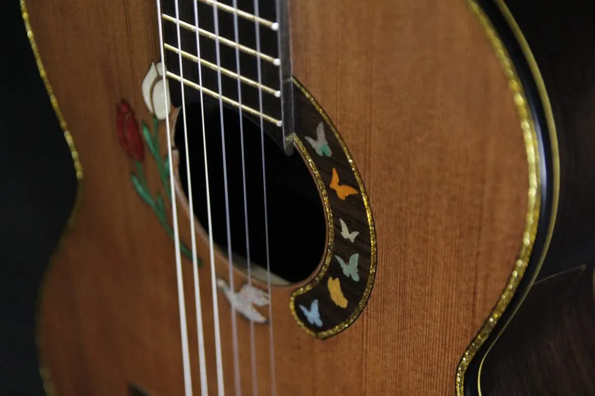
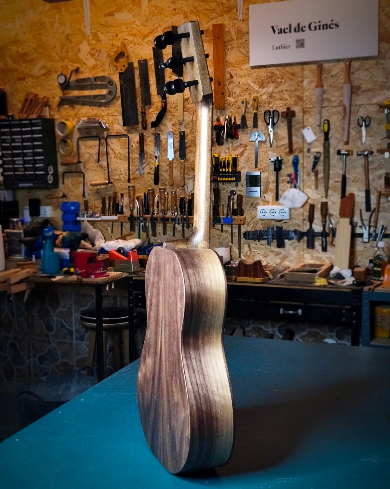

Paloma
Guitarra de autorInspirada en la sutileza del vuelo libre. Tono cristalino y respuesta inmediata, con tapa de abeto alemán y palosanto de Madagascar.
Descubrir la piezaGuitarras personalizadas
Construyo guitarras artesanales concebidas alrededor de tu forma de sentir, interpretar y entender la música. Cada instrumento es una creación única, desarrollada contigo y construida sin renunciar a ningún detalle.
Paloma · Colección de autor
Filosofía de creación
No existen dos músicos iguales. Tampoco debería haber dos guitarras que cuenten exactamente la misma historia.
Cada proyecto comienza con una conversación en la que conozco tu forma de tocar, tus preferencias y lo que buscas en un instrumento. A partir de ahí, damos forma a una guitarra que reúne tus necesidades musicales y tu personalidad.
El resultado no es una guitarra a la que tengas que adaptarte: es un instrumento pensado para ti, para tus manos y para tu manera de hacer música.

Cada decisión constructiva tiene un propósito
Cuatro principios
Escucho cómo entiendes la música, qué buscas en un instrumento y qué necesitas para sentirte cómodo tocando. Esa información se convierte en decisiones de diseño y construcción.
Proporciones, distribución de elementos internos, escala y geometría del mástil se estudian para conseguir comodidad, respuesta y rendimiento acústico. La ornamentación aporta carácter y hace única cada pieza.
Abeto, cedro, palosanto, ciprés, ébano. Maderas seleccionadas y estacionadas durante años, valorando densidad, veta, elasticidad y comportamiento antes de decidir cómo aprovechar cada pieza.
Técnicas tradicionales, trabajo manual y herramientas de precisión. La tecnología se incorpora cuando mejora el resultado, nunca como sustituto del criterio del luthier.
Vael de Ginés · Guitarras de autor
Instrumentos de alma profunda que encarnan la excelencia del luthier y la herencia de maderas nobles seleccionadas pacientemente durante décadas.
Inspirada en la sutileza del vuelo libre. Tono cristalino y respuesta inmediata, con tapa de abeto alemán y palosanto de Madagascar.
Descubrir la pieza
Una oda a las profundidades del océano. Proyección armónica colosal, cedro canadiense, koa hawaiana y detalles en pan de oro.
Descubrir la pieza
Fuerza y belleza nórdica. Graves majestuosos y nitidez lírica, con pícea de Sitka y cocobolo de vetas espectaculares.
Descubrir la pieza
La compañera de viaje de los espíritus errantes. Equilibrio, nobleza y un timbre orgánico que madura con cada pulsación.
Descubrir la pieza
Carácter salvaje e imponente. Ataque veloz, graves aterciopelados y una presencia elegante sobre el escenario.
Descubrir la pieza
Niveles y encargo
Cuatro caminos para encargar una guitarra, desde la esencia del timbre tradicional hasta la co-creación absoluta. Todos los instrumentos se construyen por encargo y se ajustan contigo.
La pureza del timbre tradicional para el intérprete riguroso.
La cumbre del detalle acústico, esculpida individualmente.
Maderas de reserva histórica curadas durante más de 40 años.
Co-creación absoluta: cada variable acústica, ergonómica y estética.
El arte de la luthería
Cada instrumento representa un viaje sin atajos hacia la perfección acústica. Seleccionamos individualmente cada madera para asegurar que cada creación posea un alma sonora irrepetible.

Búsqueda rigurosa de maderas nobles con excelentes coeficientes de resonancia, estabilidad orgánica y belleza natural.
Cálculo preciso del varetaje interno y espesores milimétricos adaptados para maximizar la proyección acústica deseada.
Ensamblado tradicional sobre solera española, respetando las tensiones naturales para una perfecta durabilidad.
Acabado a mano con goma laca o aceite de alta protección. Calibrado de precisión para una pulsación cómoda y entonación perfecta.
Revisión final, ajuste de acción y entrega del instrumento con su documentación y recomendaciones de cuidado.
Una guitarra personalizada no debería obligarte a adaptarte a ella; debería estar pensada para ti.Ginés Martínez · Luthier

Hablemos de tu proyecto
La primera conversación no tiene coste ni compromiso. Hablamos de tu forma de tocar, de las maderas que te atraen y del sonido que buscas. A partir de ahí, trazamos el proyecto.